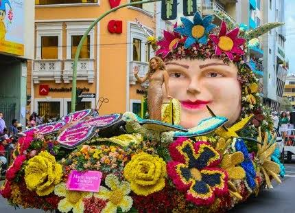

Quinta Juan León Mera
Camina por los pasillos históricos donde nació la letra del Himno Nacional, rodeado de un entorno botánico colonial eterno.
Leer más →Descubre la majestuosidad de Ambato, la mítica "Cuna de los Tres Juanes". Un destino andino único que renace en cada jardín, museo y rincón gastronómico.
Explorar DestinoUna muestra de lo que te espera en la Tierra de las Frutas y de las Flores.
Camina por los pasillos históricos donde nació la letra del Himno Nacional, rodeado de un entorno botánico colonial eterno.
Leer más →
El mega pulmón de Tungurahua te espera con miradores naturales espectaculares, zonas de picnic y senderos de aire puro.
Leer más →
Vive la celebración patrimonial más icónica del país. Desfiles monumentales de pura identidad, color, frutas y flores.
Leer más →